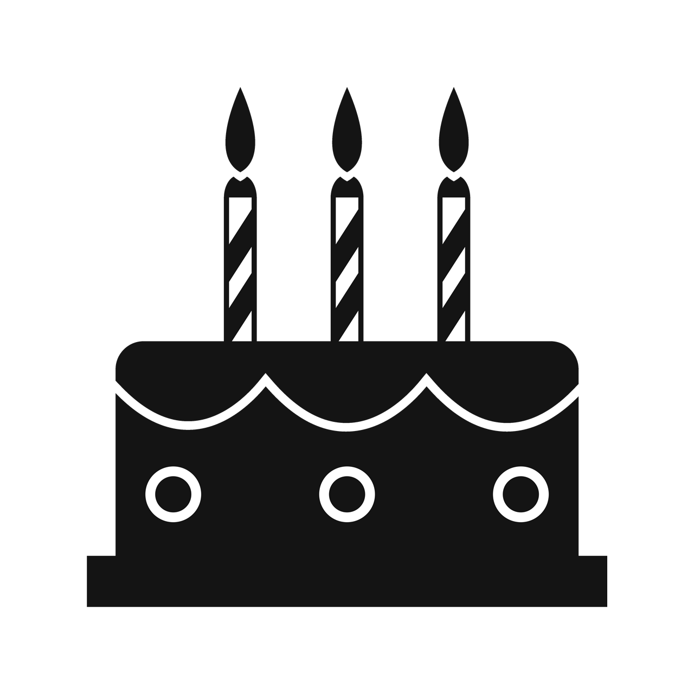

|  |
02/01/2002
|
|
quent.grange@gmail.com
|
 |
07.70.42.71.07
|
Mon linkedin
MON PROFIL
Persévérant, organisé et à l’écoute,
j’ai acquis des connaissances dans divers langages informatique durant mes études.
Ayant de multiples compétences dans le domaine de l’informatique,
je suis déterminé à les adapter et les approfondir dans le cadre professionnel.
HABILITATIONS
Langages informatique:
java, ocaml, sql, c, python, html, css


LANGUES
CENTRE D'INTERET
- Sport
- Jeux vidéos
- Progammation
|
Quentin Grange
Etudiant en 3ième année de licene MIAGE
Compétences
- Autonomie
- Créativité
- À l'écoute
- Aisance relationnelle
|
Qualités
- Esprit d'équipe
- Adaptabilité
- Persévérence
- Rigeur
|
Experiences professionelles
SDIS de l'Ardèche
Stage de 3ième,
Service informatique, maintenance et cartographie.
Rhoda coop - Beauchastel
Emploi saisonnier,
Contrôle de la qualité des fruits lors de leur conditionnement.
Travail en équipe.
2ième année de Licence I-MIAGE
Apprentissage sur :
Automates et langages,
algorithmique et programmation impérative,
méthodes informatiques et techniques de programmation,
logique et programmation, introduction aux bases de données,
introduction aux architectures logicielles et matérielles,
méthodes statistiques, diagonalisation,
forme quadrique, séries...
1ière année de Licence IMA
Apprentissage sur :
Méthodes informatiques et techniques de programmation,
formation bureautique et internet (FBI),
algorithmique et programmation fonctionnelle,
modélisation des structures informatiques,
système et environnement de programmation,
gestion de projet, mécanique, électricité,
mathématiques appliqués, anglais …
|